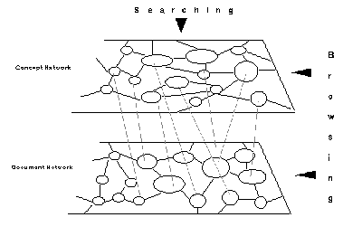

Hypermedia – Inference Networks
2.3 Inference Networks
Indexes can also be considered as “precompiled links”, providing immediate access to required information without navigating through the “document space” [Frisse & Cousins, 1989]. While nodes (containing information) can be considered part of the document space, indexes or index nodes can be treated as part of the “index space”. In traditional full-text document retrieval systems, the document space and index space are essentially flat (they are together). Frisse and Cousins suggest the use of a hierarchical index space and a networked document space for information retrieval in hypertext systems. They have investigated the representation of index spaces as belief networks. Croft and Turtle have also proposed an IR model for hypertext systems based on plausible or non-deductive inference using Bayesian inference networks [Croft & Turtle, 1989]. Belief networks or Bayesian inference networks are directed, acyclic dependency graphs where nodes represent propositional variables and links or edges represent probabilistic relationships between the propositions. A hypertext system can be compared to such a network – the roots of the dependency graph are hypertext nodes; interior nodes and leaves represent concepts.
User’s likes and dislikes are transmitted recursively from all nodes representing concepts (in the document space) to nodes in the index space. Based on this degree of belief, appropriate values are assigned to index space nodes. These changes are propagated throughout the index space using standard Bayesian techniques. If a proposition represented by a node p directly implies the proposition represented by node q, a directed graph is drawn from p to q. If-then rules in the Bayesian network are interpreted as conditional probabilities, that is, a rule A—> B is interpreted as a probability P(B|A). Given a set of prior probabilities for the roots of the DAG the probability associated with the remaining nodes can be computed. Belief values of nodes of interest to a reader increase in value while nodes not of interest generally decrease in value. These probabilistic inference techniques applied to a hierarchical index space greatly enhances the information retrieval process in hypertext or networked document spaces.
Optimal retrieval effectiveness can be obtained by ranking nodes according to estimates of the probability that the query is true given a particular hypertext node. The ranking function is approximately equivalent to giving each node a score that is the sum of the weights of matching query terms, where the weights depend on the frequency of occurrence of a term in each hypertext node and in the entire collection of hypertext nodes. This simple retrieval model can be further extended by introducing dependencies that represent links between hypertext nodes. This means if hypertext node j is indexed by a particular concept and is linked to a hypertext node k, then there is some probability that hypertext node k should also be indexed by that concept.
However, the application of Bayesian techniques to a complex graph is NP-complete. It is also not clear whether adaptive IR systems based on Bayesian inference techniques converge on the appropriate set of index space nodes given imprecise information. Frisse and Cousins are of the opinion that the computational complexity of this approach needs more investigation. Some of the other restrictions include that the network topology cannot include directed cycles and that queries with evaluable predicates such as greater than, less than etc., cannot be handled.
Lucarella suggests a similar model for hypertext-based IR. While content nodes form the document network, there can be concept nodes forming the concept network (see Figure 5.1) [Lucarella, 1990]. These concept nodes can serve as an index to the document network. The concept network is similar to the index space proposed by Frisse and Cousins. Links within the concept network establish associations between concepts. The type of the link can describe the nature of semantic association while a weight assigned to it can reflect the strength of the association. The resulting hypertext knowledge base (containing the concept network embedded within the document network) can be used for query analysis.
Based on a natural language query, the system will perform a search on the concept network to find the most pertinent sets of concepts. Concept recognition takes place by matching the various terms in the query and evaluating the matched expressions by applying similarity functions. Based on the degree of similarity between the concept and the matched item, a weight is associated to each concept. The search can be stopped based on the number of concept nodes examined and the number of top ranking concepts identified.

Figure 5.1. A Model for Hypertext-Based Information Retrieval [Lucarella, 1990].
Information is retrieved from the document network based on these retrieved concepts. Along with the exact set of documents, other sets of documents found to be semantically related to the topic of interest will be retrieved based on the weights assigned to the concepts. For example, a query to retrieve documents concerned with “expert systems” may also retrieve documents discussing “knowledge-based systems” since the two concepts are semantically related.